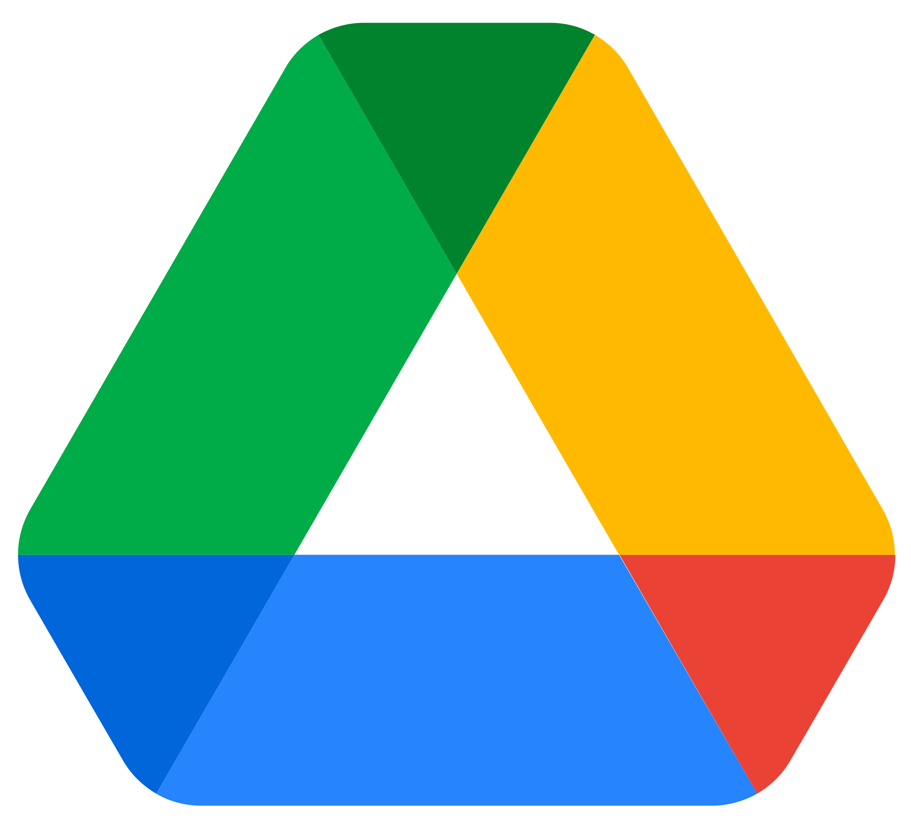

Ferramentas
Introdução
Para que o projeto seja concluído com sucesso, foram utilizadas algumas ferramentas computacionais com a finalidade de facilitar a organização e gerenciamento da equipe, além da produção dos artefatos. As ferramentas selecionadas para a realização do projeto são apresentadas na Tabela 1.
Ferramentas Utilizadas
Tabela 1 - Ferramentas Utilizadas no Projeto
| Ferramenta | Finalidade | |
|---|---|---|
  |
GitHub | Organizar, versionar e documentar artefatos produzidos para o projeto.1 |
 |
Microsoft Teams | Realizações de reuniões e gravações de apresentações.2 |
| Figma | Produção de artefatos gráficos.3 | |
 |
MkDocs | Criação das páginas de documentação.4 |
| Visual Studio Code | Edição dos arquivos de documentação. 5 | |
 |
Utilizado como principal canal de comunicação. 6 | |
 |
YouTube | Hospedagem de vídeos produzidos. 7 |
 |
Google Planilhas | Criação de planilhas relacionadas ao cronograma e horários. 8 |
 |
Google Docs | Criação e edição de tabelas e arquivos. 9 |
|  | Google Drive | Compartilhamento de arquivos. 10 |
 |
This Person Doesn't Exist | Criação de imagens falsas para as personas. 11 |
Fonte: Autores.
Bibliografia
1. GitHub. Disponível em: https://docs.github.com/pt. Acesso em: 21 de abr. de 2023.
2. Microsoft Teams. Disponível em: https://www.microsoft.com/pt-br/microsoft-teams/group-chat-software. Acesso em: 21 de abr. de 2023.
3. Figma. Disponível em: https://www.figma.com/. Acesso em: 21 de abr. de 2023.
4. MkDocs. Disponível em: https://www.mkdocs.org/. Acesso em: 21 de abr. de 2023.
5. Visual Studio Code. Disponível em: https://code.visualstudio.com/. Acesso em: 21 de abr. de 2023.
6. WhatsApp. Disponível em: https://www.whatsapp.com/?lang=pt_br. Acesso em: 21 de abr. de 2023.
7. YouTube. Disponível em: https://about.youtube/. Acesso em: 21 de abr. de 2023.
8. Google Planilhas. Disponível em: https://www.google.com/intl/pt-BR/sheets/about/. Acesso em: 21 de abr. de 2023.
9. Google Docs. Disponível em: https://www.google.com/intl/pt-BR/docs/about/. Acesso em: 21 de abr. de 2023.
10. Google Drive. Disponível em: https://workspace.google.com/intl/pt-BR/products/drive/. Acesso em: 21 de abr. de 2023.
11. This Person Doesn't Exist. Disponível em: https://this-person-does-not-exist.com/pt. Acesso em: 21 de abr. de 2023.
Histórico de Versões
| Versão | Data | Descrição | Autor(es) | Revisor(es) |
|---|---|---|---|---|
1.0 |
21/04/2023 | Criação da página de ferramentas. | Matheus Henrique e Arthur de Melo | Geovanna Maciel |
1.1 |
26/04/2023 | Adicão das referências. | Matheus Henrique | Arthur de Melo |